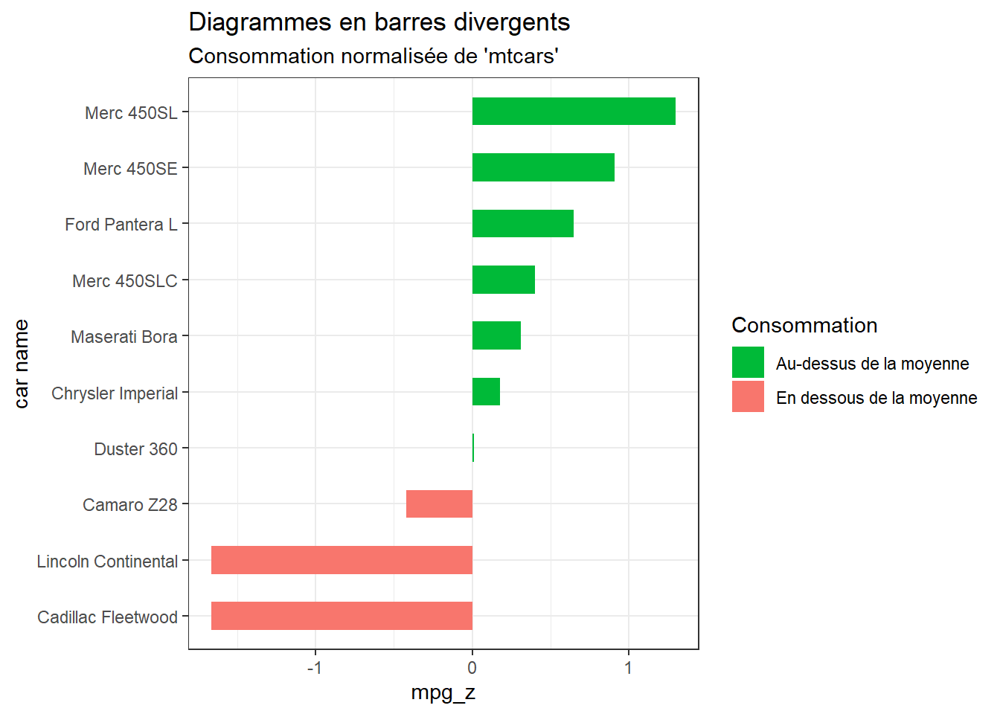
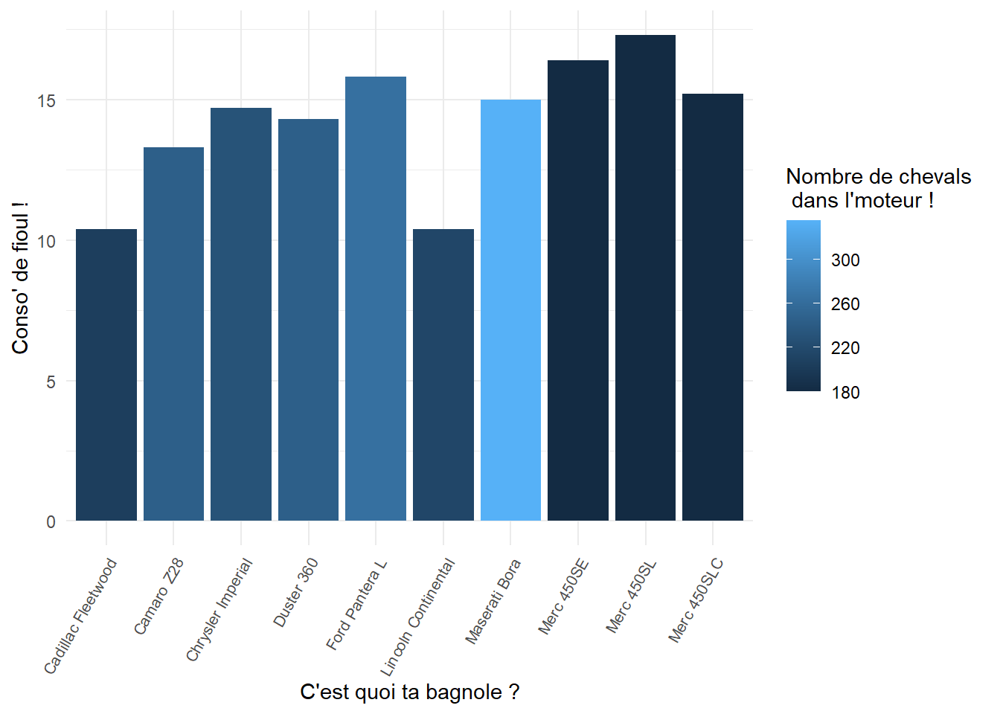

SQL c’est bien. R aussi. Pourquoi ne pas utiliser les deux en un seul endroit ? Ici, je vous montre 3 méthodes pour utiliser SQL au sein de vos scripts dans Rstudio.
Je vous recommande la troisième méthode, qui permet d’utiliser dplyr directement sur une table d’une base de données :
dplyr, vous le savez surement, est une bibliothèque R qui offre une syntaxe cohérente et conviviale pour la manipulation de données, indépendamment de la source (cadres de données R, bases de données, etc.). Elle rend les opérations de manipulation de données plus simples et plus lisibles. Autrement dit, dplyr permet de travailler de manière similaire sur différentes sources de données, qu’il s’agisse de dataframes R, de bases de données ou d’autres sources. Cela peut faciliter le travail sur différentes plates-formes sans avoir à se soucier des différences de syntaxe SQL spécifiques à chaque système de gestion de base de données.
Pourquoi ça me concerne ?
Pour les utilisateurs habitués à R, l’utilisation de dplyr offre une syntaxe plus familière et intuitive que le SQL. Vous pourrez ainsi regrouper l’entiereté de votre analyse en un seul script et la commenter, puis en faire un Rmarkdown ou un PDF. Cela facilitera significativement la collaboration avec vos collègues de l’ISEE ou d’ailleurs, et rendre votre travail reproductible et transparent !
II) Méthode 1 : SQL dans R avec le package DBI
1) Créer une BDD SQL dans R
Il y a plusieurs façons d’utiliser SQL dans R.
Nous allons d’abord utiliser une manière assez directe. Pour cela, il nous faut des données. Prenons le jeu de données ‘mtcars’ intégré à R.
mtcars_modif <- mtcarsmtcars_modif$`car name`<-rownames(mtcars_modif) # Créer une nouvelle colonne pour les noms des voitures
R: Motor Trend Car Road Tests
mtcars
R Documentation
Motor Trend Car Road Tests
Description
The data was extracted from the 1974 Motor Trend US magazine, and comprises fuel consumption and 10 aspects of automobile design and performance for 32 automobiles (1973–74 models).
Usage
mtcars
Format
A data frame with 32 observations on 11 (numeric) variables.
[, 1]
mpg
Miles/(US) gallon
[, 2]
cyl
Number of cylinders
[, 3]
disp
Displacement (cu.in.)
[, 4]
hp
Gross horsepower
[, 5]
drat
Rear axle ratio
[, 6]
wt
Weight (1000 lbs)
[, 7]
qsec
1/4 mile time
[, 8]
vs
Engine (0 = V-shaped, 1 = straight)
[, 9]
am
Transmission (0 = automatic, 1 = manual)
[,10]
gear
Number of forward gears
[,11]
carb
Number of carburetors
Note
Henderson and Velleman (1981) comment in a footnote to Table 1:
‘Hocking [original transcriber]'s noncrucial coding of the
Mazda's rotary engine as a straight six-cylinder engine and the
Porsche's flat engine as a V engine, as well as the inclusion of the
diesel Mercedes 240D, have been retained to enable direct comparisons
to be made with previous analyses.’
Source
Henderson and Velleman (1981),
Building multiple regression models interactively.
Biometrics, 37, 391–411.
Examples
require(graphics)
pairs(mtcars, main = "mtcars data", gap = 1/4)
coplot(mpg ~ disp | as.factor(cyl), data = mtcars,
panel = panel.smooth, rows = 1)
## possibly more meaningful, e.g., for summary() or bivariate plots:
mtcars2 <- within(mtcars, {
vs <- factor(vs, labels = c("V", "S"))
am <- factor(am, labels = c("automatic", "manual"))
cyl <- ordered(cyl)
gear <- ordered(gear)
carb <- ordered(carb)
})
summary(mtcars2)
Commençons ici par créer une base de données (BDD) vide, dans laquelle nous allons stocker mtcars. Elle nous servira d’exemple pour les traitements SQL à venir. En revanche, la manière de se connecter à votre BDD dépendra de la solution utilisée (SQlite, MySQL, SQLserver, etc) et de l’adresse de la BDD en question.
N’hésitez pas à me contacter en cas de problèmes.
Le but ici : Créer une connection vers la base de données. Pour cela, nous allons utiliser “pool” : Une ‘pool’ vous permettras de gérer vos connections à la BDD sans avoir à réflechir. Pensez simplement à la fermer après usage (voir ci dessous). #Pour plus d’infos voir : https://shiny.posit.co/r/articles/build/pool-basics/
# Créer une connection.con <-dbPool(RSQLite::SQLite(), dbname =":memory:")
Maintenant, crééons la table “mtcars” au sein de notre BDD.
# Créer une table SQL avec le jeu de données "mtcars".dbWriteTable(con, "mtcars", mtcars_modif)dbListTables(con)
[1] "mtcars"
# Voila, notre BDD est crée !dbListFields(con, "mtcars")
2) Effectuer une requête SQL dans R à l’aide d’un chunk dédié.
Bien, il est temps d’effectuer notre première requête !
Le language de la requête est SQL, mais on utilise la fonction dbGetQuery() du package DBI pour faire notre requête. Le chunk reste donc en language R.
Vous pouvez donc simplement copier la requête SQL qui vous a demandé tant d’efforts !
mt_cars_df <-dbGetQuery(con, "SELECT *FROM mtcarsWHERE hp > 150 AND mpg < 18")
Voilà, c’est tout simple ! A vous de complexifier vos requêtes, et de découvrir les possibilités offertes par ce package.
3) Analyser les données de la requête
Maitenant, on repasse en R !
Et on utilise le résultat de notre requête pour faire un petit graphique !
theme_set(theme_bw()) # Préparation des donnéesmt_cars_df$mpg_z <-round((mt_cars_df$mpg -mean(mt_cars_df$mpg))/sd(mt_cars_df$mpg), 2) # Calculer la consommation de carburant normaliséemt_cars_df$mpg_type <-ifelse(mt_cars_df$mpg_z <0, "en dessous", "au-dessus") # Indicateur au-dessus/en dessous de la moyennemt_cars_df <- mt_cars_df[order(mt_cars_df$mpg_z), ] # Triermt_cars_df$`car name`<-factor(mt_cars_df$`car name`, levels = mt_cars_df$`car name`) # Convertir en facteur pour conserver l'ordre trié dans le graphique.# Diagrammes en barres divergentsggplot(mt_cars_df, aes(x=`car name`, y=mpg_z, label=mpg_z)) +geom_bar(stat='identity', aes(fill=mpg_type), width=.5) +scale_fill_manual(name="Consommation", labels =c("Au-dessus de la moyenne", "En dessous de la moyenne"), values =c("au-dessus"="#00ba38", "en dessous"="#f8766d")) +labs(subtitle="Consommation normalisée de 'mtcars'", title="Diagrammes en barres divergents") +coord_flip()

Ici, j’utilise ggplot2 pour créer un graphique en barres divergentes, en mettant en évidence les voitures ayant une consommation de carburant supérieure et inférieure à la moyenne.
Le graphique présente les noms des voitures sur l’axe des x et la consommation de carburant normalisée sur l’axe des y. Les barres sont colorées en fonction de la consommation de carburant par rapport à la moyenne.
Le graphique est affiché en orientation horizontale (coord_flip()) pour une meilleure lisibilité des noms des voitures.
III) Méthode 2 : SQL en chunks
Une autre solution pour utiliser SQL dans R studio : Créer des chunks ou le code sera executé en SQL !
Cette solution simple permet de copier+coller directement vos requêtes dans un chunk. Cela dit, vous devrez au préalable effectuer la connexion avec la base de données.
1) Effectuer une requête SQL dans R à l’aide d’un chunk dédié.
Insérons un chunk sql et sélectionnons les voitures à plus de 150 chevaux et consommant moins de 18 gallons par mile.
SELECT*FROM mtcarsWHERE hp >150AND mpg <18
Dans l’entête de ce chunk à la place de {r} j’ai mis : {sql, connection=con, output.var = “mt_cars_df_2”}
Notez que la connection à été faite avec “connection = con”, et que le résultat de la requête à été stocké dans “mt_cars_df_2”, directement dans R studio !
2) Analyser
Tout comme avant, on peut analyser le résultat “mt_cars_df_2” directement en R.
ggplot(mt_cars_df_2) +aes(x =`car name`, y = mpg, fill = hp) +geom_col() +scale_fill_gradient() +theme_minimal()+labs(x ="C'est quoi ta bagnole ?", y ="Conso' de fioul !", fill ="Nombre de chevals \n dans l'moteur !") +theme(axis.text.x =element_text(size =8, angle =60, hjust =1))

IV) Méthode 3 : SQL & Dplyr !
Tu sais mieux coder en R qu’en SQL ? Cette solution est faite pour toi !
library(dbplyr)library(dplyr)
Ici, on utilise le package dbplyr pour rédiger des commandes dplyr standard qui seront converties en SQL ! Une fois de plus, en utilisant la connexion et la base de données du premier exemple, vous pouvez rédiger un appel standard à la fonction filter() pour interroger les voitures avec quatre cylindres, cela renvoie un objet de type liste :
#On commence par faire la connection à la bonne base de données :dbplyr_query <-tbl(con, "mtcars") %>%# Puis on pipe une action, ici la fonction filter, # comme on le ferait sur n'importe quel jeu de données. filter(hp >150&& mpg <18)
Et comme notre “connection” (con) ici est une pool, on peut également utiliser dplyr directement dessus :
dbplyr_query <- con %>%tbl("mtcars") %>%# Puis on pipe une action, ici la fonction filter, # comme on le ferait sur n'importe quel jeu de données. filter(hp >150&& mpg <18)
Si vous souhaitez voir la traduction en code SQL de votre commande, vous pouvez utiliser la fonction show_query() du package dbplyr :
show_query(dbplyr_query)
<SQL>
SELECT *
FROM `mtcars`
WHERE (`hp` > 150.0 AND `mpg` < 18.0)
Lorsque vous êtes satisfait des résultats de votre requête, vous utilisez la fonction collect() du package dbplyr pour sauvegarder vos résultats sous forme de dataframe :
Pearson's product-moment correlation
data: tibble_from_dbplyr$mpg and tibble_from_dbplyr$hp
t = -0.098037, df = 8, p-value = 0.4622
alternative hypothesis: true correlation is less than 0
95 percent confidence interval:
-1.0000000 0.5277646
sample estimates:
cor
-0.03464065
Hé ben pas tellement on dirait ! Les grosses voitures que nous avons sélectionné doivent toutes polluer autant les unes que les autres :)
V) Exemple sur une BDD de l’ISEE
Voyons voir ce que cela donne dans la vie réelle, c’est à dire en utilisant une BDD de l’ISEE.
La BDD en question est AdventureWorks. C’est une BDD mise à disposition par Microsoft pour faire des tests.
library(odbc)odbcListDrivers()
name attribute
1 SQL Server APILevel
2 SQL Server ConnectFunctions
3 SQL Server CPTimeout
4 SQL Server DriverODBCVer
5 SQL Server FileUsage
6 SQL Server SQLLevel
7 SQL Server UsageCount
8 SQL Server Native Client 11.0 UsageCount
9 SQL Server Native Client 11.0 APILevel
10 SQL Server Native Client 11.0 ConnectFunctions
11 SQL Server Native Client 11.0 CPTimeout
12 SQL Server Native Client 11.0 DriverODBCVer
13 SQL Server Native Client 11.0 FileUsage
14 SQL Server Native Client 11.0 SQLLevel
15 ODBC Driver 13 for SQL Server UsageCount
16 ODBC Driver 13 for SQL Server APILevel
17 ODBC Driver 13 for SQL Server ConnectFunctions
18 ODBC Driver 13 for SQL Server CPTimeout
19 ODBC Driver 13 for SQL Server DriverODBCVer
20 ODBC Driver 13 for SQL Server FileUsage
21 ODBC Driver 13 for SQL Server SQLLevel
22 SQL Server Native Client RDA 11.0 UsageCount
23 SQL Server Native Client RDA 11.0 APILevel
24 SQL Server Native Client RDA 11.0 ConnectFunctions
25 SQL Server Native Client RDA 11.0 CPTimeout
26 SQL Server Native Client RDA 11.0 DriverODBCVer
27 SQL Server Native Client RDA 11.0 FileUsage
28 SQL Server Native Client RDA 11.0 SQLLevel
29 ODBC Driver 17 for SQL Server UsageCount
30 ODBC Driver 17 for SQL Server APILevel
31 ODBC Driver 17 for SQL Server ConnectFunctions
32 ODBC Driver 17 for SQL Server CPTimeout
33 ODBC Driver 17 for SQL Server DriverODBCVer
34 ODBC Driver 17 for SQL Server FileUsage
35 ODBC Driver 17 for SQL Server SQLLevel
36 Microsoft Access Driver (*.mdb, *.accdb) UsageCount
37 Microsoft Access Driver (*.mdb, *.accdb) APILevel
38 Microsoft Access Driver (*.mdb, *.accdb) ConnectFunctions
39 Microsoft Access Driver (*.mdb, *.accdb) DriverODBCVer
40 Microsoft Access Driver (*.mdb, *.accdb) FileUsage
41 Microsoft Access Driver (*.mdb, *.accdb) FileExtns
42 Microsoft Access Driver (*.mdb, *.accdb) SQLLevel
43 Microsoft Excel Driver (*.xls, *.xlsx, *.xlsm, *.xlsb) UsageCount
44 Microsoft Excel Driver (*.xls, *.xlsx, *.xlsm, *.xlsb) APILevel
45 Microsoft Excel Driver (*.xls, *.xlsx, *.xlsm, *.xlsb) ConnectFunctions
46 Microsoft Excel Driver (*.xls, *.xlsx, *.xlsm, *.xlsb) DriverODBCVer
47 Microsoft Excel Driver (*.xls, *.xlsx, *.xlsm, *.xlsb) FileUsage
48 Microsoft Excel Driver (*.xls, *.xlsx, *.xlsm, *.xlsb) FileExtns
49 Microsoft Excel Driver (*.xls, *.xlsx, *.xlsm, *.xlsb) SQLLevel
50 Microsoft Access Text Driver (*.txt, *.csv) UsageCount
51 Microsoft Access Text Driver (*.txt, *.csv) APILevel
52 Microsoft Access Text Driver (*.txt, *.csv) ConnectFunctions
53 Microsoft Access Text Driver (*.txt, *.csv) DriverODBCVer
54 Microsoft Access Text Driver (*.txt, *.csv) FileUsage
55 Microsoft Access Text Driver (*.txt, *.csv) FileExtns
56 Microsoft Access Text Driver (*.txt, *.csv) SQLLevel
value
1 2
2 YYY
3 60
4 03.50
5 0
6 1
7 1
8 1
9 2
10 YYY
11 60
12 03.80
13 0
14 1
15 1
16 2
17 YYY
18 60
19 03.80
20 0
21 1
22 1
23 2
24 YYY
25 60
26 03.80
27 0
28 1
29 1
30 2
31 YYY
32 60
33 03.80
34 0
35 1
36 3
37 1
38 YYN
39 02.50
40 2
41 *.mdb,*.accdb
42 0
43 3
44 1
45 YYN
46 02.50
47 2
48 *.xls,*.xlsx, *.xlsb
49 0
50 3
51 1
52 YYN
53 02.50
54 2
55 *.txt, *.csv
56 0
# Créer une connection vers AdventureWorks2016 ! CON_AW2016 <-dbConnect(odbc(), Driver ="SQL Server", Server ="sql-data\\test", Database ="AdventureWorks2016",Trusted_Connection ="True") # La trusted connection fonctionne car vous êtes déjà authentifié sur votre session windows :) dbListTables(CON_AW2016)
A noter que vous pouvez utiliser autre chose que RSQLite (pour du MySQL, PostGre, etc…)
MyAdventure2016_db <- CON_AW2016 %>%tbl(in_schema("Sales", "CreditCard")) %>%# Puis on pipe une action, ici la fonction filter, # comme on le ferait sur n'importe quel jeu de données. filter(CreditCardID <300)
Ce qui est génial, c’est que la commande ci-dessus ne stocke pas les données sur R, car les données restent stockées sur le server ! En fait, cette commande ne touche même pas à la base de données du server, tant qu’on ne demande pas d’afficher les résultats, comme ceci :
Maintenant qu’on a bien peaufiné notre “requête” (écrite par nous même en R avec la syntaxe dplyr, mais traduite en SQL par dbplyr), on peut collecter les données. Notez bien que, tant qu’on n’a pas explicitement dit à dbplyr de “collecter” les données, tout reste sur le server ! Pour traiter les données sur R ou pour tout autre raison, vous pouvez collecter les données comme ceci :
Si vous souhaitez voir la traduction en code SQL de votre commande, vous pouvez utiliser la fonction show_query() du package dbplyr :
show_query(MyAdventure2016_db)
<SQL>
SELECT *
FROM "Sales"."CreditCard"
WHERE ("CreditCardID" < 300.0)
Et voila, nous avons une table sur laquelle opérer !
Mettons que je veuille supprimer une ligne.
Evidemment, rappelez-vous que vous portez l’entière responsabilité des commandes SQL que vous lancez sur les bases de données. Si vous avez un doute sur votre syntaxe, faites la vérifier !
Malheureusement, dbplyr ne fait pas tout ! En fait, il se concentre surtout sur les SELECT et ses dérivés.Nous devrons utiliser la première méthode (I), décrite plus haut.
# Supposons que vous voulez mettre à jour la colonne 'CardType' où 'CreditCardID' est égal à 1update_query <-"UPDATE Sales.CreditCard SET CardType = 'NouveauType' WHERE CreditCardID = 1"# Exécuter la requête pour mettre à jour la table dans la base de données# dbExecute(CON_AW2016, update_query)
Ici, cela ne fonctionne pas : Nous n’avons pas les droits ! Mais vous voyez l’idée, remplacez seulement votre requête SQL entre guillements.
VI) Fermez la connection !
Avoir trop de connections à une base de données, surtout si elles sont inutilisées, c’est mauvais (Pour la sécurité, la performance, etc).
On va donc fermer notre pool :
# Fermer la pool de connexionspool::poolClose(con)